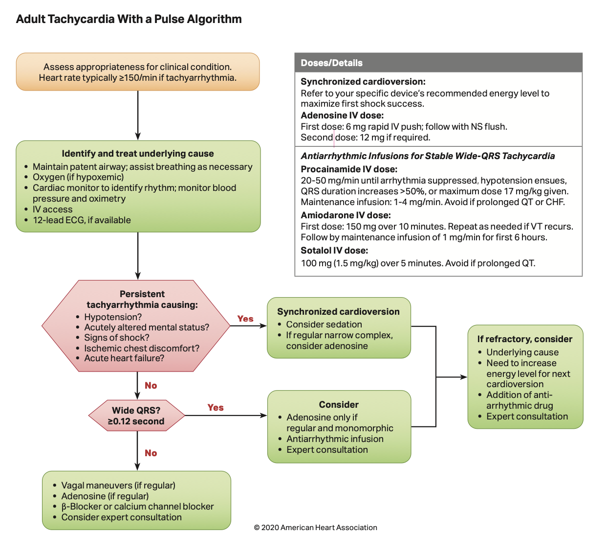

Check serial EKGs and hsTnT immediately and within 1-3 hours
- Rule in: hsTnT ≥10 (F) or ≥15 (M) AND Δ ≥7 from baseline AND sx or ECG changes or concerning imaging (CCTA, cath)
→ consider ACS
STEMI:
- 1mm STE in two contiguous leads (if V2-V3: >2.5mm in M<40, 2mm in M>40, 1.5mm in F) OR new LBBB AND + biomarkers
- If baseline LBBB, use Sgarbossa's criteria: ≥1 mm concordant STE, 1mm STD V1-V3, ≥5 mm discordant STE
- Electrically Silent: LCx or RCA lesions. Consider posterior V7-V9 leads, in which STE>0.5mm is diagnostic. Other changes: large R in V2-V3, STdep in anterior leads (mirror image effect)
Credit: J Am Coll Cardiol Case Rep. 2019 Dec, 1 (4) 666-668.
- Non-STE ischemic EKG changes: ≥0.5mm STD (horizontal, downsloping), new TWI ≥1mm or normalization ("pseudonormalization") of prior TWI in s/o sx
- ASA 325(load)
- NTG 0.3-0.6mg x3, if refractory gtt (start 5-10mcg per minute)
- High intensity statin
- Heparin gtt (+/- bolus and use low intensity PTT goal)
- BB start within 24 hours
- ACEi/ARB start within 24 hours if BP and renal function normal
- Procainamide: 20-50mg/min until hypoTN or QRS ↑ 50% → 1-4 mg/min
- consider adenosine unless WPW
Wide/irreg:
- PMVT: amio, lido; tx ischemia
- Torsades: Mg 2mg, ↑ HR Isoprot.
- AF+WPW:procainamide, ibutilide (1mg)
(🚫 adenosine, BB/CCB, dig)

VAGAL MANEUVERS:
- Unilateral Carotid Massage: supine with neck extended → steady pressure to carotid sinus (inferior to angle of the mandible at level of
thyroid cartilage near carotid pulse), avoid if prior TIA/CVA in past 3mo, and those with carotid bruits
- Modified Valsalva Maneuver: semi-recumbent → blow forcefully into a 10cc syringe x10-15 seconds → reposition to supine and
passively raise legs at 45° for 15 seconds; 43% effective in breaking SVTs vs 17% with standard Valsalva
- Also consider: cold ice face immersion or ice-water bag to face (diving reflex, more effective in children); 17% success.
→ less effective s/p heart transplant, avoid with AV block Mobitz II or CHB
- Dopamine 5-20 mcg/kg/min
- Epinephrine 2-10mcg/min
- Isoproterenol 2-10mcg/min
Transcutaneous pacing
- Basics: Emergent 2mg lorazepam + 2mg dilaudid +/- intubate → turn to PACER → SET RATE: 100 BPM + SET OUTPUT: 100 mA → turn output down to minimum needed to → capture → adjust rate down
- Transvenous pacing (cards consult)
Specific Antidotes by Cause
- Beta blocker: glucagon 3-10mg IV (if no response, repeat bolus, if response, infusion at 3-5mg/h)
- Calcium channel blocker: glucagon as above, calcium gluconate 3-6g q10-20min or gtt, insulin 1U/kg bolus with 0.5U/kg gtt
- Digoxin: dig immune FAB vial, 1 vial binds ~ 0.5mg digoxin, administer over 30min
- Opioids: naloxone 0.4-0.8mg IV, consider gtt
- Organophosphate: atropine 2-5mg IV (double dose q5min until effect), pralidoxime 1-2g IV over 15-30min
Disclamers:
*Nurse: Place pads on patient
*Dont forget to specify on call within drug orders
Do not use Dobutamine as it worsens hypertension
Severe asymptomatic HTN (formerly HTN urgency): BP ≥ 180/120 w/o evidence of end-organ damage (may have mild headache)
- commonly due to pain, anxiety, urine retention, meds (e.g. steroids), OSA, nausea, withdrawal, etc.
Route of Medications: PO > IV
Hypertensive emergency: BP ≥ 180/120 w/ evidence of acute end-organ damage (rate of rise may be more impt. than actual BP)
Stabalization: NPO; supplemental O2 as needed, intubation if high-risk for aspiration (large volume hematemesis, AMS); ensure ≥2 PIV (18G or larger; rarely done by IV nurse)
→ Resuscitation/Transfusion:
- IVF (isotonic crystalloid) for hypotension.
- Do not delay transfusion if actively hemorrhaging, otherwise transfuse pRBCs for Hgb >7 or Hgb >8 if CAD.
- Note: Hct drop lags 24-72h from onset of bleeding.
- For severe/ongoing bleeding (generally after 4u pRBCs), activate massive transfusion protocol (see Transfusion Medicine).
- Avoid overtransfusion if possible EVs (can ↑ portal pressures and worsen bleeding).
→ Correct coagulopathy: Tranfuse plts for plt >50k. Consider prothrombin complex concentrate (PCC) (preferred over
FFP for lower volume, faster onset). If uremic, consider ddAVP (0.3 mcg/kg). If ESLD, INR inaccurate - avoid FFP
volume →↑ portal pressure
IV PPI: pantoprazole 40mg BID (neutralizing acid stabilizes clots); ↓ high-risk lesions requiring endoscopic therapy
but unclear clinical impact pre-EGD
For cirrhosis: IV octreotide 50 mcg bolus (may repeat bolus in first hour if bleeding uncontrolled) followed by
octreotide gtt at 50 mcg/hr for 3-5 days. IV CTX 1g q24hr x7 days for ppx against bacterial infections and mortality
benefit. Stop β-blockers.
Defintion:distal to ligament of Treitz
S/Sx: hematochezia, rarely melena, BUN/Cr typically ɬ20
Call ICU for:
- BP <l90 and HR >100
- Hct <20/Hgb <7 x2 30min apart
- require >2L VF or 2u pRBCs to prevent instability/keep Hct >5
- ATLS hemorrhagic shock class III;
Assessment:
Inital workup: CBC (q2-12hr depending on severity of bleed), CMP, coags, type & screen. Consider:
→ CT angiography: 1st line imaging for lower GI bleeding in both hemodynamically stable and hemodynamically
unstable patients (ACR Approp. Criteria). Detects bleeding at a rate of 0.3-0.5mL/min. Consider if shock index (HR/SBP) >1.
Stabalization: NPO; supplemental O2 as needed, intubation if high-risk for aspiration (large volume hematemesis, AMS); ensure ≥2 PIV (18G or larger; rarely done by IV nurse)
→ Resuscitation/Transfusion:
- IVF (isotonic crystalloid) for hypotension.
- Do not delay transfusion if actively hemorrhaging, otherwise transfuse pRBCs for Hgb >7 or Hgb >8 if CAD.
- Note: Hct drop lags 24-72h from onset of bleeding.
- For severe/ongoing bleeding (generally after 4u pRBCs), activate massive transfusion protocol (see Transfusion Medicine).
- Avoid overtransfusion if possible EVs (can ↑ portal pressures and worsen bleeding).
→ Correct coagulopathy: Tranfuse plts for plt >50k. Consider prothrombin complex concentrate (PCC) (preferred over
FFP for lower volume, faster onset). If uremic, consider ddAVP (0.3 mcg/kg). If ESLD, INR inaccurate - avoid FFP
volume →↑ portal pressure
Aspiration → Suction
Mucus plug → RT
Pneumonia → ABX
Pulm edema → Diuresis
PE → Heparin Drip
Pneumothorax → Needle Decompress
Pleural effusion → Diuresis
NS: CVA, ICH, sz, infxn, PRES
Metabolic toxins: NH3, CO2, BUN, Na, glucose
Exogenous toxins: meds, drugs, w/d
Vitals: HTN/HoTN, hypoglycemia, hypoxemia
Misc: TTP, AI, hypothyroid
Lorazepam 2-4mg IV/I0x2
diazepam 20mg PR
levetiracetam 20mg/kg
Neuro On-Call: 520-xxx-xxxx
Epi 0.3-0.5 IM (1:1000; 1mg/mL)
Epi 0.1-0.3mg IV (1:10,000; 0.1mg/mL)
→ repeat q5-15min; start gtt if>3 required
Other agents: Benadryl 50mg, methylpred 125mg,albuterol neb, IVF